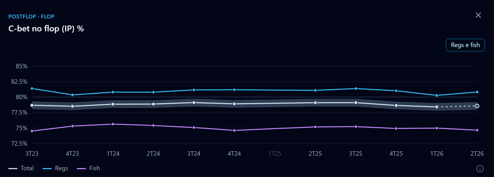

2 / 6
Field Trends
STAT
POR STAT

114
stats do pós-flop: c-bet, fold to c-bet, donk, probe e mais, trimestre a trimestre.
Só o c-bet IP no flop soma
75,7 milhões
de mãos
(a soma inclui o 2T26, em curso)
.